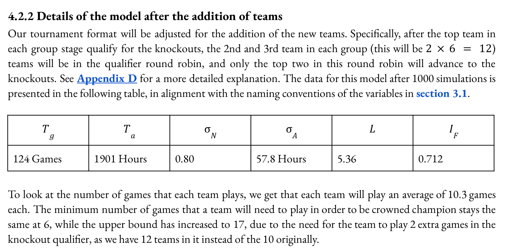

From last week's Team Papers

Maths Team · Mathematical Modelling · Session 2
Last week your model missed. Today you find out why, and fix it.
Scroll down to begin
From last week's Team Papers
Four Bolts, one after another: 38.32 s. The real relay record: 36.84 s. Faster by 1.48 s.
Why? Writers, your team's explanation.
I will not say who is right. In team time, your own spreadsheet will.
The same race, Berlin 2009. This time the clock is read every 10 metres.
When is he fastest? Is he ever running at 10.44 m/s?
Today's Maths Tool
speed = 10 ÷ (t₂ − t₁)
From 10 m to 20 m he takes 2.88 − 1.89 = 0.99 s, so his speed there is 10 ÷ 0.99. In a sheet, each speed is one formula: =10/(B3-B2)
speeding up, then top speed
One speed for the whole race was last week's model. This week the race has stages, and each stage has its own rule. Mathematicians call this a piecewise model.
Where does "speeding up" end and "top speed" begin? You decide, from your own numbers, and you write it down as an assumption.
The next runner may start running 20 m before the line, and the baton must change hands inside a 20 m zone.
Watch the speed of the baton, not the runners. Which handover keeps it moving faster?
Build a second model of the relay. Every runner is Bolt, and the baton changes hands at 90 m.
Thirty-five minutes, and I will not interrupt. The card gives the rules, not the method. One device per team, for the spreadsheet only.
Decides the top speed, and writes each assumption before it is used.
Builds the sheet: ten times, ten speeds, then the four runners.
Notes why the relay is faster. Brings me the model's total.
Checks three speeds by hand. Draws the handover for the team.
Stuck on the model after ten minutes of trying? The Writer may collect a hint card. Still no AI and no searching.
Bolt's speed over each 10 metres, in metres per second. Does your sheet agree?
He passes 10.44 m/s in the first 30 m and never holds it. It is the average of a slow start and a fast finish.
In a relay only the first runner starts from standing still. The slow first 10 metres, 1.89 s of it, happens once, not four times.
The first model was 1.48 s too slow. The second is about 1.7 s too fast.
Is that progress? Hands up. Then, Writers: what does your second model leave out?
What you have done twice now has a name: the modelling cycle. It has five steps.
Understand the real problem. Why is a relay faster?
Make assumptions and build a model. Every runner is Bolt.
Work the model out. Your spreadsheet.
Say what the number means. A relay time.
Compare with reality. Find what to fix.
Evaluating is not the end. It sends you back to step 2.

Team 2025006, International Mathematical Modeling Challenge 2025: scheduling a global sports league. Shown for study in class.
Question B from the first meeting. The team built a league for 20 countries. Then the problem asked: what if four more join?
Find the sentence that compares the new model with the old one. You do not need to follow the symbols.
They did not start again. They said what changed, kept the rest, and reported the new result the same way as the old.
Now the Hall Problem. Your first estimate was one speed for the whole hall, like last week's runner. Here is the real time.
"Our first model assumed … It gave … The measured time was …, an error of … %. A second model needs these stages: …"
Writer types, the others say what to write: your estimate, the measured time, the percentage error, and the stages your second model of the hall will need. Use the names of the five steps where they fit.
Next week opens with the best sentence I find.
Exit slip. On the slip of paper: one thing that was unclear today, and one thing you liked. No name needed.
About 30 minutes: build your second model of the hall, in stages, in a sheet. The steps are on the reading version.
Session 3: which sport suits you best, and what does "best" mean?